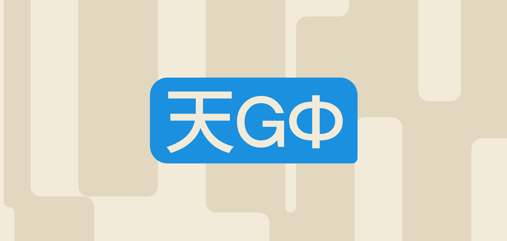

ИИ меняет сам способ взаимодействия с продуктами. Вместо управления через элементы интерфейса появляется взаимодействие через язык. Пользователь больше не просто нажимает кнопки — он формулирует намерения, задаёт вопросы, уточняет, переспрашивает. Продукт, в свою очередь, отвечает, интерпретирует и развивает мысль. Интерфейс превращается в диалог.
Сдвиг от действий к намерениям
В классическом интерфейсе пользователь должен был понимать структуру продукта: где находится нужная функция, какой путь пройти, какие элементы использовать.
В диалоговой модели это знание больше не требуется. Пользователь сразу выражает, чего он хочет, а система берёт на себя задачу интерпретации. Это снижает барьер входа, но делает критически важным качество понимания.

Язык как новый интерфейс
Язык становится основным инструментом взаимодействия. В отличие от кнопок, он гибкий, но неоднозначный. Один и тот же запрос можно сформулировать по-разному, и результат будет отличаться.
Поэтому дизайн должен помогать пользователю:
- структурировать запрос,
- понимать, что можно спросить,
- двигаться к более точному результату.
Интерфейс начинает поддерживать мышление, а не только действия.
Роль уточнений
Диалог — это всегда процесс. Система не обязана понимать всё с первого раза, но она должна уметь уточнять и направлять. Важно, чтобы уточнения выглядели естественно и помогали продвигаться вперёд, а не тормозили взаимодействие. Баланс между «слишком мало» и «слишком много» вопросов становится одной из ключевых задач дизайна.
Диалог как совместное мышление
Самое важное изменение — взаимодействие становится процессом совместного поиска. Пользователь и система вместе приходят к результату через уточнения, итерации и развитие ответа. Продукт больше не просто выполняет команды. Он участвует в формировании решения. И именно качество этого процесса — насколько он понятен, управляем и полезен — определяет ценность опыта.